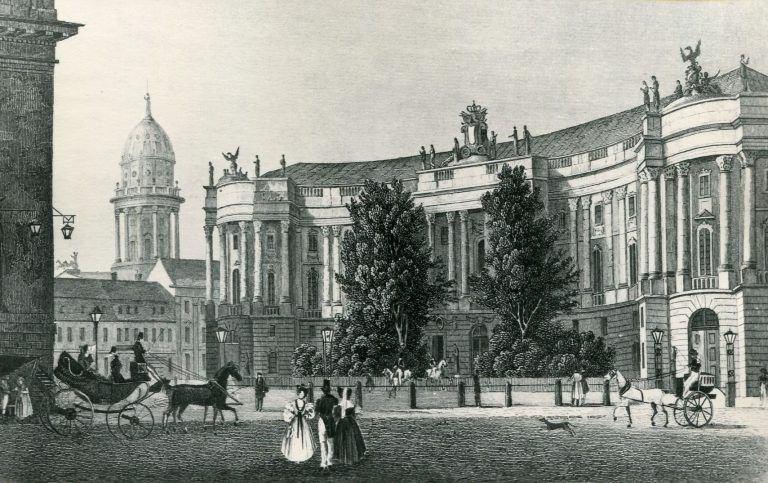
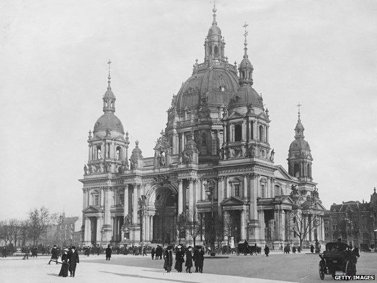
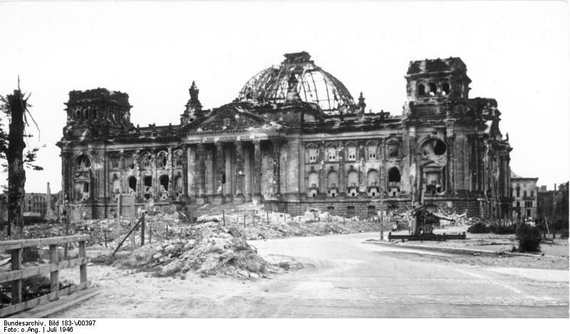
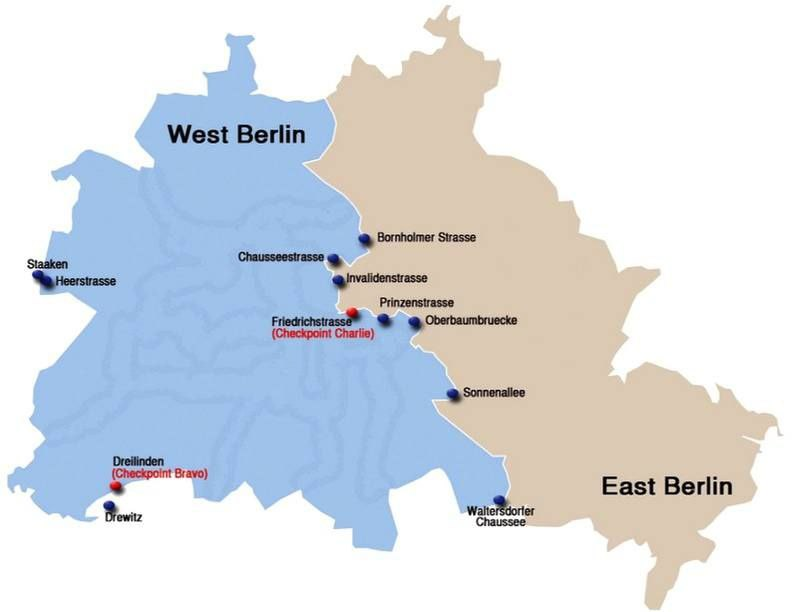

| Strona główna | Historia | Historyczne miejsca | Kuchnia | Fakty |
Historia

W 1871 r. miasto zostało stolicą zjednoczonych Niemiec – jako cesarstwa. Stołeczną funkcję zachował do dziś, będąc następnie stolicą Republiki Weimarskiej, III Rzeszy, Niemieckiej Republiki Demokratycznej oraz Republiki Federalnej Niemiec. Po 1874 r., po śmierci hrabiego Atanazego Raczyńskiego, niemiecki rząd zakupił Pałac Raczyńskich, w latach 1884–1894 wznosząc w jego miejscu gmach parlamentu. W 1875 r. w dawnym Pałacu Radziwiłłów umieszczono Kancelarię Rzeszy. Po I wojnie światowej w 1918 ogłoszono w Berlinie republikę. W 1920 r. na podstawie tzw. Ustawy o Dużym Berlinie ponownie znacznie rozszerzono obszar miasta, przyłączając kilka miast i kilkadziesiąt wsi. Berlin osiągnął wówczas około 4 mln mieszkańców.

Po przejęciu władzy przez nazistów w 1933 r. Berlin stał się stolicą III Rzeszy. W 1936 r. odbyły się w Berlinie igrzyska olimpijskie. Planowano znaczną rozbudowę miasta na stolicę świata, czemu przeszkodziła klęska Niemiec w II wojnie światowej. W czasie alianckich bombardowań i walk o zdobycie Berlina przez wojska radzieckie i polskie znaczne obszary zabudowy zostały dosłownie zmiecione z powierzchni ziemi. Berlin został zniszczony w 40% i w 10% jego infrastruktura podziemna.

Po II wojnie światowej Berlin został podzielony przez aliantów na 4 sektory okupacyjne. Stąd też przed ponownym zjednoczeniem Niemiec miasto było podzielone na część wschodnią, stanowiącą sektor radziecki i od 1949 r. stolicę NRD (Berlin, Hauptstadt der DDR), i część zachodnią (Berlin Zachodni), będącą specjalnym obszarem administrowanym przez aliantów ze statusem zbliżonym do wolnego miasta powstałą z francuskiego, brytyjskiego i amerykańskiego sektora okupacyjnego.

W latach 1948–1949 Sowieci wprowadzili blokadę Berlina Zachodniego, na co alianci zachodni odpowiedzieli uruchomieniem mostu powietrznego z zaopatrzeniem. W latach 1961–1989 Berlin Zachodni był otoczony murem, którego zburzenie w 1989 r. stanowi symbol zjednoczenia dwóch części miasta oraz dwóch państw niemieckich.
© Anna Baraban